SUPERVIVIENTES
El 18 de Enero de 1973, a 27 días del rescate de los sobrevivientes, una patrulla formada por varios miembros del Cuerpo de Socorro Andino y un Cura de Chile, fueron llevados en helicópteros hacia los restos del Fairchild. Allí, a pocos metros del avión levantaron un campamento con la idea de quedarse algunos días. Se dispusieron a reunir los restos que quedaban de los muertos por los alrededores del Fairchild y por la montaña. A ochocientos metros del avión encontraron una zona donde parecía que no había riesgo de avalanchas, fue allí donde dieron sepultura a las víctimas del accidente. Decidieron que su trabajo había sido terminado, y acordaron dejar el lugar.
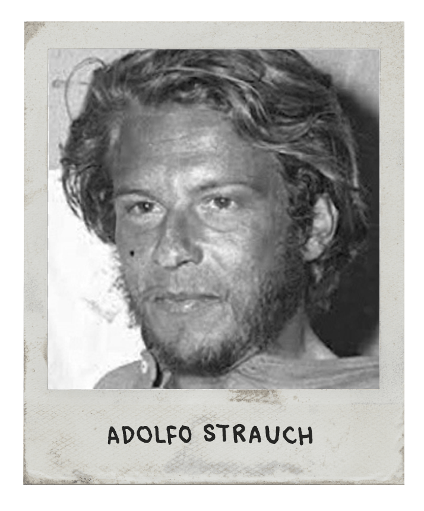
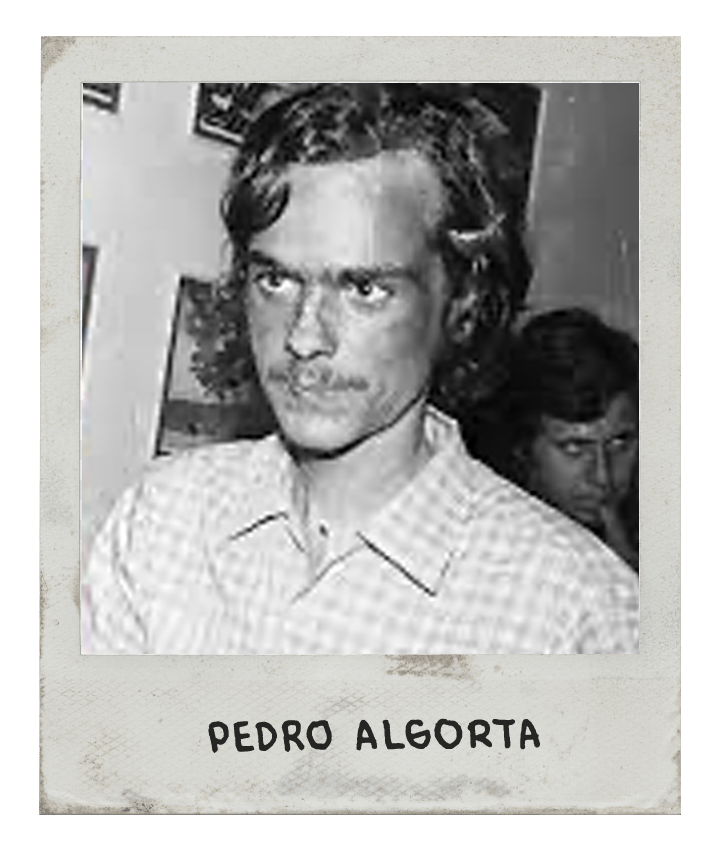
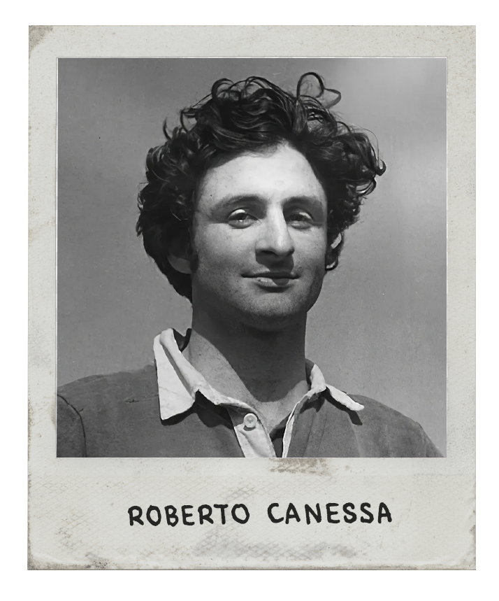
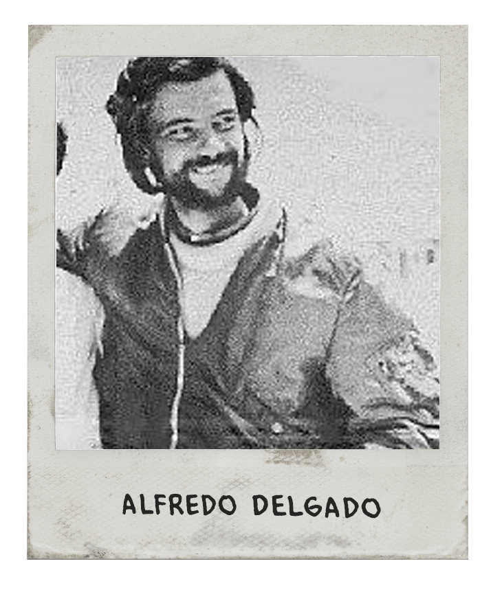
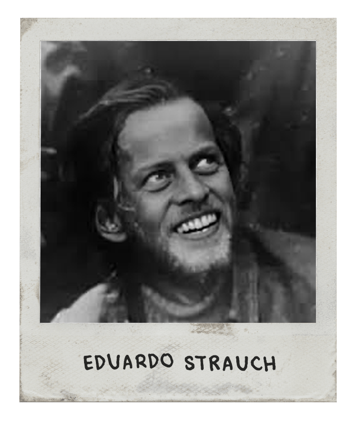
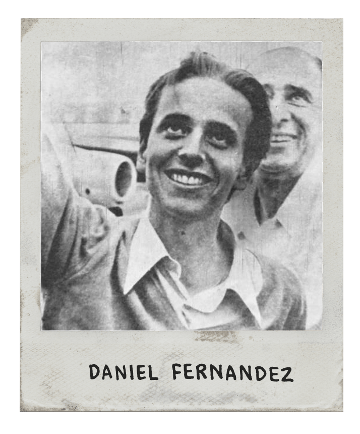
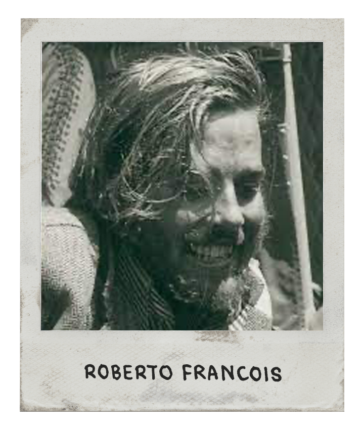
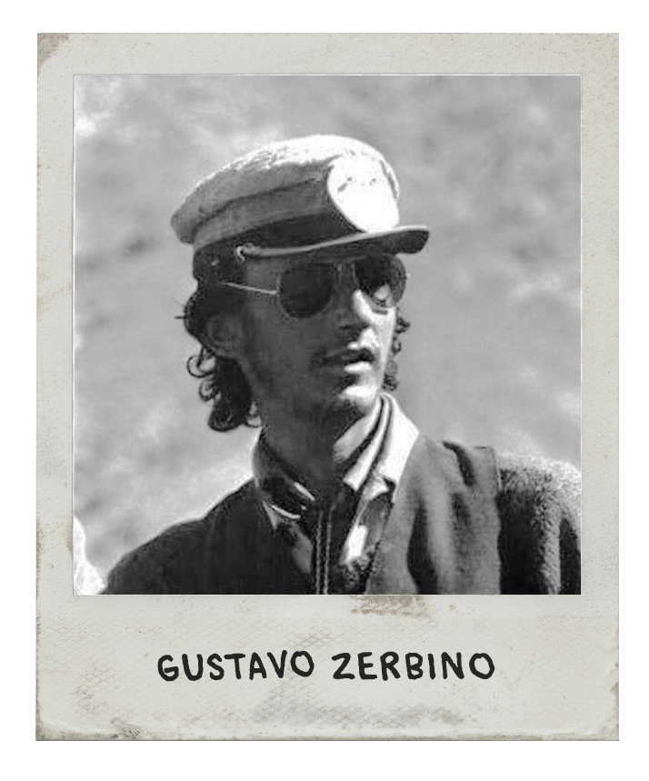
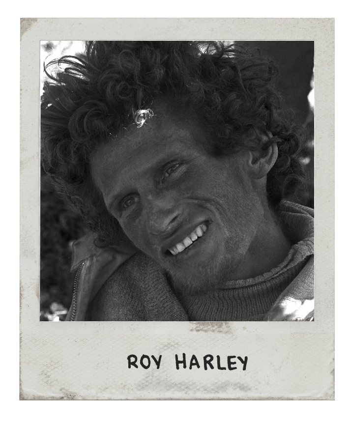
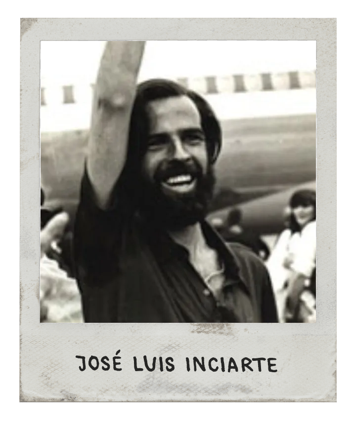
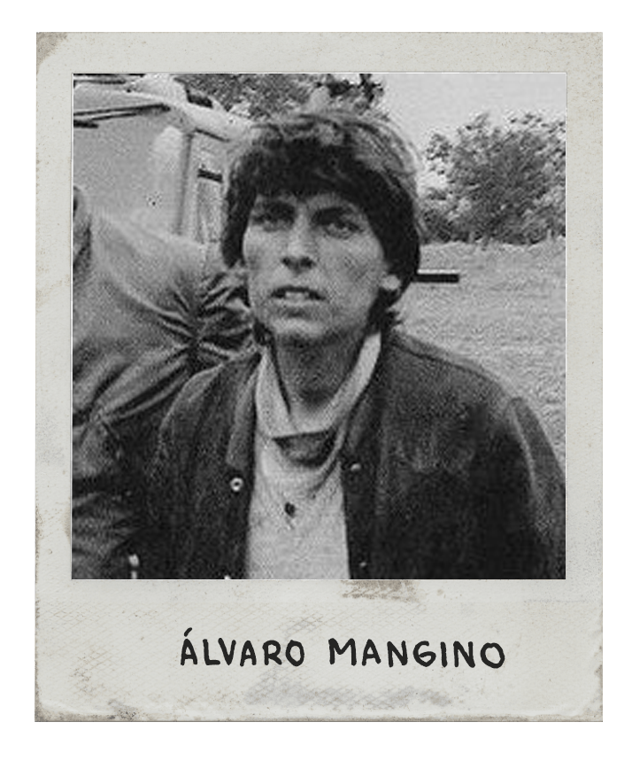
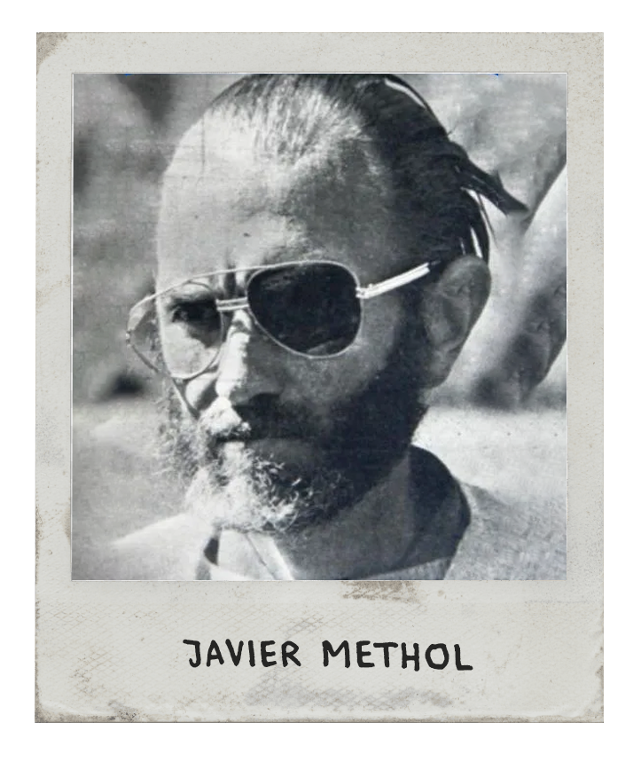
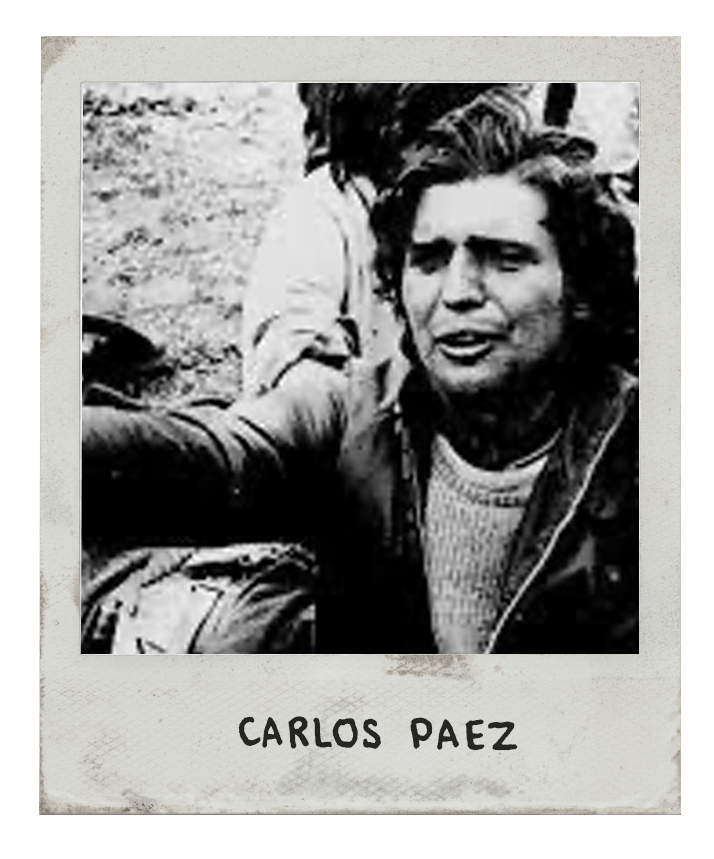
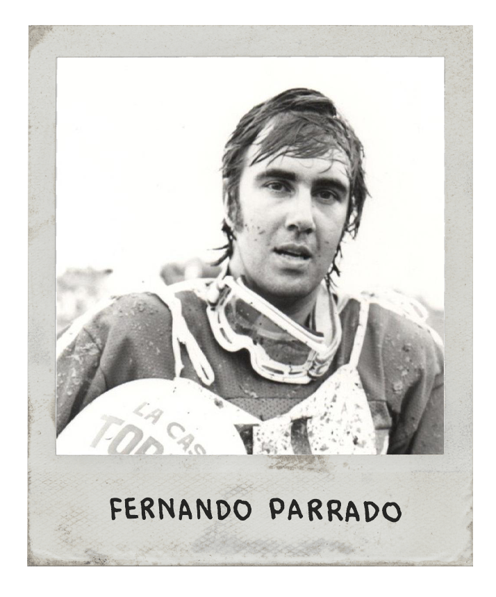
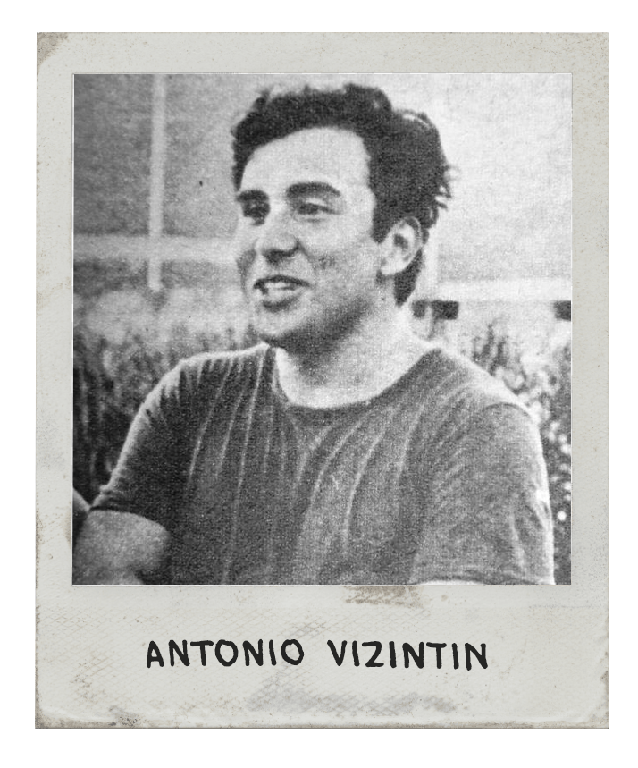